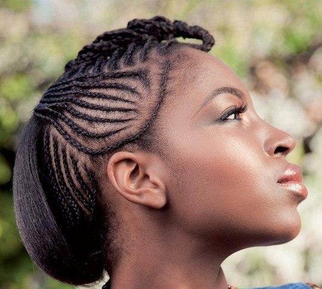
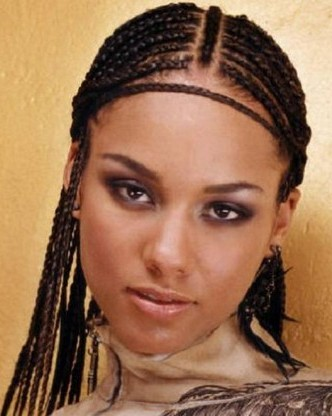
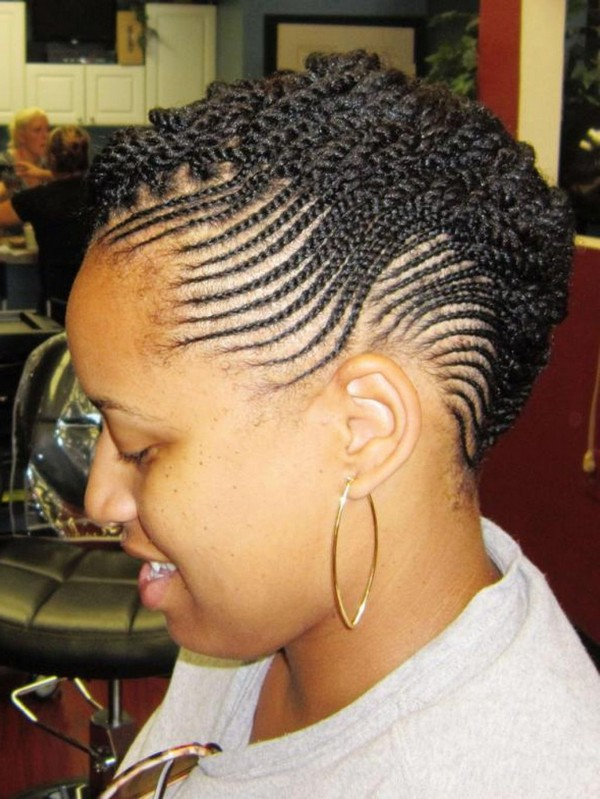
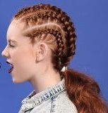

|
Natural Cornrow Hairstyles




Cornrow hairstyles are not only popular with women but also for men.
Most people admire this style because it's very easy to maintain.
Cornrows are a unique work of art which an expert stylist creates.
Are you getting tired of wearing the same style over and over again? If so then you can ask your stylist for new looks and designs.
Let your hair braider try various ideas on your hair and trust them completely. This is how new styles will be discovered.
With cornrows, you can instantly change your appearance. With just a few braids, your basic look can transform into an elegant look.
This is also an ideal protective style especially if you don't have enough time to style your hair every day.
|